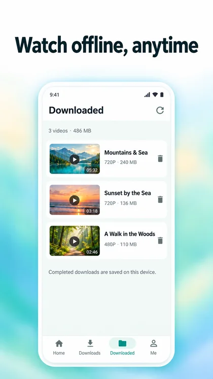

Save videos. Watch offline.
Browse or paste a supported video link, choose the available quality, and save it to your Android device.
Get it on Google PlayNo account required. Contains ads with optional one-time ad removal.

From a link to your offline library
Open the video
Browse in the app or paste a supported video link.
Pick the quality
Choose from the source's available quality options and start the download.
Watch it offline
Open Downloaded to find and play videos saved on your device.
Try it with a sample
Copy the address of this sample page and paste it in Video Downloader. The sample is provided by us and can be downloaded for testing.
Open the authorized sample pageWhich videos can I save?
You can save content you own or have permission to download, where the source allows it. Support and quality depend on the source. Downloads from YouTube, SoundCloud and Spotify are blocked. DRM-protected videos, live streams and private content are unsupported.